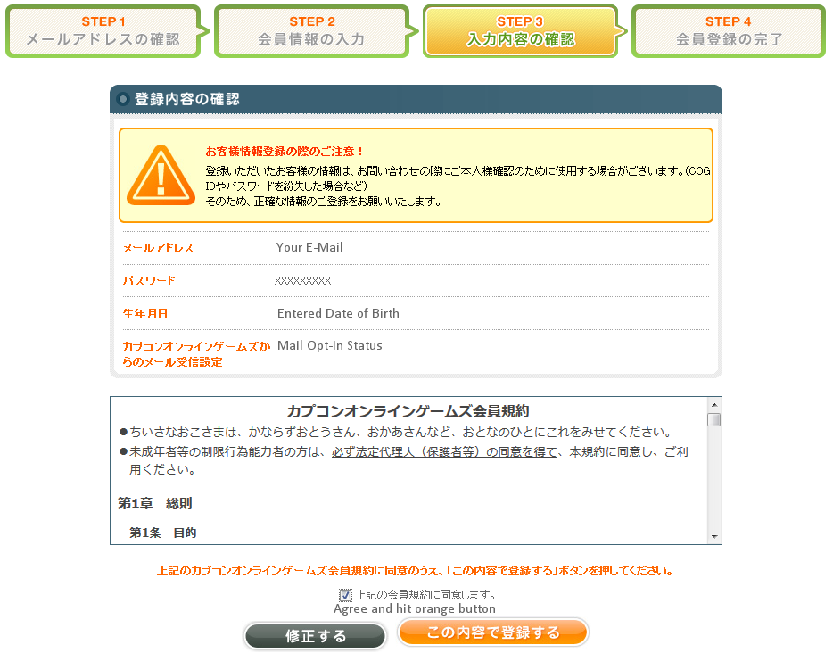
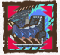

Playing on JP
JP Sign Up
COG Account
This process is pretty straight forward, visit this link and follow the images below.
Enter your Email and the Captcha code.
Get your Verification Code from the email and enter it.
Enter your made up personal details and password.
Agree to the Terms of Service.

Write down your COG ID for logging into the game later.
Your COG ID is your username equivalent, you will need to enter it in the Launcher to sign in and play.
After all of the Sign Up process, visit this link, agree to the terms and hit the orange button. This enables access to MHFZ JP proper.
Basic Installation
Read the Dual Client Install section instead if you want to keep playing on TW too, especially with the English Patch.
Download the client here and install it. It doesn't particularly matter what you choose in the install process but for best practice when you have two options select the one that talks about COG ID.
Dual Client Set Up
Download the JP client here.
The TW and JP installs clash with each other, you can have both installed but will need to manually swap versions. For the sake of this example the main install folder is C:\Games\Capcom\Frontier
- 1. Install TW to C:\Games\Capcom\Frontier\
- 2. Update the TW client and copy it to C:\Games\Capcom\TW\
- 3. Uninstall the TW client
- 4. Install the JP client to C:\Games\Capcom\Frontier\
- 5. Update the JP client and copy it to C:\Games\Capcom\JP\
- 6. You should now have both TW and JP clients in their own folders
- 7. Delete the C:\Games\Capcom\Frontier\ folder (may need a reboot)
- 8. Create a pair of bat files called TW.bat and JP.bat respectively with the content below:
TW.bat
rmdir "C:\Games\Capcom\Frontier"
mklink /d "C:\Games\Capcom\Frontier" "C:\Games\Capcom\TW\"
JP.bat
rmdir "C:\Games\Capcom\Frontier"
mklink /d "C:\Games\Capcom\Frontier" "C:\Games\Capcom\JP\"
Adjust the above directory names to match where you placed things. Running JP.bat will swap to the JP client and TW.bat will swap to the TW client. Premade bats for the exact folder structure used above can be found here.
If you don't want to use the bat files and symbolic links you can just move and rename folders manually. This is less elegant as TW handles a font poorly and will require you to restart to swap clients without needing to manually move folder contents.
VPN Options
Mudfish VPN
A paid option that is designed specifically for only routing a game's traffic through a VPN without impacting the rest of your system. The minimum fee of $2.99 is more than enough to cover the rest of the game's lifespan.
Sign up on mudfish.net and download the client in the client section.
After starting the application, go into Item followed by Equip Items and Monster Hunter Forntier Z.
In the following options, ensure you select Asia (Japan) and then any JP Asia node. You can experiment across the options but it will ultimately make little difference.
Just having the application running with the item added will handle everything related to MHF fine.
VPN Gate
A free option that doesn't have the nice features of Mudfish VPN.
Download the VPN Gate Installer and install it.
After opening double click on the VPN Gate Public VPN Relay Servers option to get a list of servers.
Double click any server with a Region in Japan, checking the other stats to see how stable and fast it is for best choice.
Read the prompt and follow its general advice, you may need to connect a couple times or to different servers to find a solid choice.
This is all the set up required and you will be able to play MHF now.
Client Updating
It's important to realise that the client install is not up to date with latest files and will need to download some files, the best way to handle this is to log in to the point the CRC checks and download process starts and then simply disconnect from your VPN.
After disconnecting the client will happily continue crc checking and updating as required but will not use your VPN for this traffic which will be massively faster. You will of course, need to sign in again after the process completes.
Starting the Game
For the Japanese version you should simply use Locale Emulator with default settings which is perfectly set up for Japanese games by default.
It's important to use Locale Emulator because not using the proper format can cause a number of issues including crashing and slowdown so don't try and avoid it when there's no advantages to doing so.
Gearing and Freebies
Basic Gearing
Up to GR1, you should follow the exact same flow as you would on TW from the Basics and Beginners section.
JP has a couple of even easier gearing options than the Taiwanese server which makes doing the Hunter Guide stuff almost completely pointless. What you should do instead is an Event Silver Rathalos Quest which gives you the Donru Armour.
The quest in question is named 《G★7イベント》 力卜レアのおすすめ and is the first event quest in the first section.
Completing the Silver Los quest rewards a minimum of 50x Mercury Books (水銀の書) a run which creates you a full set of Dounru GX (ドゥンルGX). Notably, all pieces of Dounru start at GX level when crafted which means upgrading these pieces can be seen as completely optional.
A lazy option for some basic decorations is advisable to immediately hit up road with a carry (or to facetank the easier monsters), road has powerful Furious decorations with a progression requirement of one floor and a cost of 500 points which can easily boost your Dounru set:
500 RP Decos
|
| Ｇ級・獅血珠 | Furious +2, Vampirism +3, Vigorous +2 |
| Ｇ級・獅雷珠 | Furious +2, Thunder Clad +2, Flash Conversion +2 |
| Ｇ級・獅撃珠 | Furious +2, Stylish Assault +2, Strong Attack +2 |
| Ｇ級・獅猛珠 | Furious +2, Rush +2, Drawing Arts +3 |
| Ｇ級・獅剣珠 | Furious +2, Sword God +2, Issen +2 |
| Ｇ級・獅射珠 | Furious +2, Steady Hand +2, Issen +2 |
In terms of what you should actually insert, going with Ｇ級・獅血珠 x5, Ｇ級・獅雷珠 x1 and Ｇ級・獅猛珠 x1 gets you a solid base set of skills and leaves you room for your free Hiden decorations.
Freebies
Determination Decos
Once a day you can roll a gacha for Raviente decorations, you have 50% chance of 1x Basic Raviente Decoration, 45% chance of 2x Violent or Berserk Raviente Decorations or 5% chance of 3x Extreme Raviente Decorations
To roll these, talk to the Gacha Cat in the blacksmith and select ノーマルくじ and you simply need to use 4,000 HRP tickets (ギルドへの推薦状) which you get from doing quests or in huge quantities from the Hunter Guide.
You will take 2 days with GOD RNG to get determination with this system.
True Hiden Decos
You can trade 50k Gzeny cheques (ポルタカード桜) on the Gacha Cat in the blackmith for True Hiden decorations. This is accessed in the ボックスくじ option followed by イベントボックスくじ and then 真秘伝ボックスくじ.
This Gacha is a Lucky Box style and as such if you simply keep rolling it you will eventually get every single variant of every single True Hiden decoration from simply getting cheques.
Hiden Cuffs
You can claim the materials to make up to four hiden cuffs by hitting G Rank requirements or owning certain equipment.
Hiden Cuff Rewards
|
| Hit GR500 | Kill Dyuras or Gogomoas |
| Own 試作型磁斬槌-α | Bone Magnet Spike, unlock weapon type and buy 磁斬鎚試作用素材 on General Store |
| Own 決意の剣斧【X】 | Ketsui Series Swaxe and Tonfa, GR200 Hypnoc in Bamboo Forest with Beak Break |
| Own 決意の棍【X】 |
You create the Cuffs on the combiner and will need to turn in the Hiden Soul, Ribbon and Merit Stones on their dedicated quests on HR and GR NPCs.
Depending on how you actually utilise the materials, you can get either 7x G or True Hiden cuffs or 50x Standard Hiden Cuffs.
A good balance would realistically be making 6 G or Trues and 8 Standard to cover all weapon classes if desired.
ZZ Content
Overview
In brief this update adds a a new weapon class, new sigil types, a new mode for monsters and expands the G Rank ranking limit to GR999.
A changelog can be found here translated from the official site and sources. This release is functionally Z3 in terms of approach and how it's being released. No new exotics were added for ZZ.
Magnet Spikes
Basics
Magnet Spikes are a weapon with two modes that can be morphed between; these are respectively cutting and impact modes which deal the exact type of damage they are named for and use those hitboxes.
Unlocking Magnet Spike
There's a very short storyline involved with unlocking magnet spike, you will need to go on a number of solo only quests the culminate in unlocking magnet spikes and getting the materials for a Prototype MS for both yourself and your partner. These quests aren't terribly hard but as they are G Rank you will probably want at least the first GR set you get for free to finish them in a timely manner. A
A brief guide to the unlocking process is below:
- Talk to the smithy and blatantly ignore what he's saying.
- Head into the legendary bar and talk to the new NPC, Graham.
- Head out and to the entrance and talk to the cat you've ignored 800 times.
- Go back in and talk to Graham and do the G Rank Gougarfs in the top section.
- Go talk to Graham and then the combiner in the town square.
- Go and hunt the G Rank Rebidora in the same section as the Gougarfs.
- After the hunt head back and talk to Graham, the Smith, Graham again and then the Road NPC.
- Post the new G Rukodiora in the topmost section and murder it to death.
- Talk to Graham after returning and then the Smith.
- You've now unlocked Magnet Spikes and have the materials for a free Prototype.
Magnet Spike Stats
Magnet Spikes have absolutely no non-standard elements compared to standard weapons; they do not have phials nor do they have length. Their attack multiplier is 5.4, meaning you divide by 5.4 and round up to get actual true raw.
Despite the name, Magnet Spikes are not in fact spikes. They are called Magnet Spikes because they are Magnets and in the game full of Spikes.
Using Magnet Spikes
As mentioned, magnet spikes have two modes. Cutting and impact. Both can be swapped to and unsheathed into at any time from idle and neither relies on a meter or gauge to be active. Attack wise, you can swap from any horizontal in one mode into a horizontal of the other.
Cutting mode has fast attacks and evasions similar to those of Dual Swords while Impact is slower with heavy hitting single attacks and but still has quick swipes and a very fast charge.
At any time in either mode you can also toggle aiming mode which allows you to shoot a Magnetic Marker on a monster, or to attract towards or repel away from an already placed marker.

If you attract of repel is based on the distance from the monster. Too close will only allow you to Repel (Blue), too far will not allow any action (White), while being the proper distance will allow you to Attract (Red). Attraction will chase a monster even if it moves as long as you follow a linear path towards it and can be cancelled into either an evade or a powerful falling attack.
Both modes charge as you use them, when their icon turns red you can magnetise the weapon which buffs all attacks by 1.1x similar to a power phial and adds additional hits to select attacks for a duration of 80 seconds.
After the magnetism mode expires you will be locked out of gaining any progress towards it again for a short period of time. Both modes charge independently and can be left at red charge level indefinitely to be activated whenever you wish.
Both modes have a gauge which is used for things such as evasions, attracting and repelling from a monster and initiating the Magnetic Pin attack (covered below) which recharge over time and while attacking a monster.

As mentioned the gauge also indicates if you can use the Attract and Repel functions which launch you into the air to chase the magnetic marker you have placed on a monster. Every action which consumes gauge will simply consume a single bar.
The magnetic pin is very similar in build up to a standard status effect, if you hit the monster with a sufficient amount of attacks it'll get a moving magnetism effect on the monster's body to indicate it is ready to be pinned.
Pinning can be done out of either Magnetic Double Slash or Double Swipe and causes you to leap into the air and slam down your Magnet Spike pinning the monster and initiating a QTE the keeps the monster in place until you either perform a pin or fail the QTE.

The QTE will indicate what you have to mash directionally and button wise, mashing well enough will cause the monster icon's face to turn red and allow you to perform a Pin Finisher. This has an incredibly high motion value and will cause the monster to fall over while extending the period the monster is trapped for briefly due to the actual finisher having a lengthy animation.
The finisher itself is very notable in that it targets the spot you have your magnetic marker attached to. This allows you to select the best hitbox or the most desirable parts to break on a monster. For tails this does in fact deal cutting damage but can only reduce a tail to 1HP, this allows any single cutting damage hit to immediately sever them.
Magnet Spike Moveset
The flow chart below is the official one from capcom's official manual. It is mostly complete but is missing a few less obvious combos such as the Magnetic Assault Leap in cutting mode flowing into Upslash and then Vertical 2 allowing for a Finishing Slash earlier than is overwise possible.
| Cutting Mode Motions |
Impact Mode Motions |
| Unsheathe Vertical |
61
| Horizontal 1 |
44 (30) |
| Vertical 1 |
43
| Horizontal 2 |
53 (30) |
| Upslash |
35
| Overhead Horizontal |
100 (45) |
| Vertical 2 |
46
| Down Swipe |
46 (25) |
| Horizontal 1 |
56
| Triple Strike 1 |
51 (10) |
| Horizontal 2 |
46
| Triple Strike 2 |
58 (20) |
| Horizontal 3 |
64
| Triple Strike 3 |
130 (50) |
| Finishing Slash |
120
| Charged Strike |
338 (190) |
| Finishing Slash (Magnetised) |
120 ‧ 10x3
| Charged Strike (C.UP+1) |
363 (190) |
| Guard Counter |
30
| Charged Strike (C.UP+2) |
373 (190) |
| Guard Counter (Success) |
30 ‧ 80
| Supplex |
96 ‧ 121 (50 ‧ 65) |
| Magnetic Double Slash ※ |
44 ‧ 54
| Guard Assault ※ |
73 ‧ 90 (35 ‧ 45) |
| Magnetic Evade into Upslash |
55
| Magnetic Double Swipe ※ |
42 ‧ 52 (30 ‧ 35) |
| Retreat Slash ※ |
20 ‧ 20
| Magnetic Shock (Whiff) |
75 (30) |
| Magnetic Assault (Leap) ※ |
80
| Magnetic Shock (Iframed) |
125 ‧ 5x3 (60 ‧ 5x3) |
| Falling Downslash ※ |
200
| Magnetic Assault (Leap) ※ |
40 ‧ 50 (35 ‧ 35) |
| Magnetic Pin |
1
| Falling Swings ※ |
25 ‧ 80 ‧ 120 (20 ‧ 35 ‧ 75) |
| Magnetic Pin Finisher |
600
| Magnetic Pin |
1 |
| ※ = Has Iframes |
Magnetic Pin Finisher |
600 |
Zenith Sigils
About
Zenith Sigils are a new type of sigil introduced in the ZZ update, they are usable with a base duration of between 15 and 25 seconds depending on sigil rather than always on passive effects like standard Sigils. There are functionally two types of these; Standard Zenith Sigils and AoE Zenith Sigils.
Zenith Sigils can come from simply doing any rank of zenith, overall drop rate is not currently known but is at the lower end and likely syncs with the rare carve reward rate on each zenith tier (1%, 3%, 5%, 7%).
脅異の印章
Zenith Sigil Material
Both types of Zenith Sigil work in the same way: a new item icon in the shape of a sigil will appear on your item bar which can be used at any time - as long you are not actively performing an action - by simply hitting the use button. Using a Zenith Sigil causes you to do the Smoke Bomb animation activating the buffs on the sigil.
Standard Sigils
Activating a Standard Sigils will apply a number of buffs to you, these have a fixed duration and recharge time that is based on the values rolled on the sigil itself. For duration this is a base of 15 seconds with the duration value of the sigil being added to this (e.g. +4 duration would be 19 seconds) while the recharge time is a base of 2 minutes (or 120 seconds) with the value of the sigil removed (e.g. +14 to recharge is 1:46 or 106 seconds.)
The buffs of the sigils themselves do not map directly to the values and are far stronger than low rolls make them seem (e.g. +15 Attack is actually +330 attack) and with good management a decent roll will end up easily as good as a top end roll on a normal sigil.
Area of Effect Sigils
Activating an Area of Effect sigil will create a dome on the ground around where you activated it, this has a set duration of around 25 seconds and a recharge duration of 2 minutes.
Area of Effect sigils can buff Attack, Elemental, Status, All Resistance, Affinity and Stun output as well as providing passive healing. You can roll multiple types of these buffs on a single sigil which will cause the dome to alternate between the colours indicating which buffs are active.
Like Standard Sigils the values on these sigils do not in fact directly relate to how much you will be buffed. A sigil with +1 elemental and +14 to Resistances will in fact increase Elemental by 100 and All Resistances 28. Higher rolls obviously grant much higher returns.
GR999 & Unlimited Mode
GR999
GR999 is exactly what it sounds like. They increased the maximum rank to GR999 which is unlocked with a total of 13,716,950 GRP, this is a total of 2,331,451 GRP needed if you are GR899 already. While this is a fairly large amount you can stack a huge number of buffs to multiply gain and GRP quests including a Gogomoa for 8,000 GRP ship with ZZ.
Buff wise you can stack Diva Song, Log In Boost, Hardcore Mode and whatever Premium Courses you want to make this take an incredibly trivial amount of time.
Hitting GR999 adds box pages, SR food to the standard Food NPC and old Event Armours to the Warehouse Manager NPC inside the blacksmith. These sets are probably of minimal use unless you have rushed to GR999 on premium without assembling a real set.
UL Mode is primarily a source of the new per weapon type Weapon Up Sigils, these grant attack, elemental and affinity to their roll value as well as any standard rolls be Sigils get. Actual rates on the items needed for this are fairly low but can be increased by using the daily target board and hunting the monster that gives better rates that day (★1-2, ★3-4, ★5-7 bands).
Armour Store
| GR999 Armour Store |
| ホープGX | 希望GX | Beginner G Set |
| ルクストGX | 光輝使者GX | White Nun |
| オレウムGX | 暗黑侵蝕GX | Black Nun |
| クラントGX | 死亡咆哮GX | Purple Nun |
| ユプケGX | 尤普肯GX | Gray and Green Samurai |
| 若紅葉GX | 若紅葉GX | Green Demon Blademaster |
| 翡戸隠GX | 翡戶隱GX | Green Demon Gunner |
| コルーデGX | 協力GX | Butler / Maid Guildie |
| スフォルGX | 威力GX | 2015 Event Armour |
| カイオルGX | 匠心GX | Red Silver Abomination |
| ユーリスGX | 公義GX | Green Purple Abomination |
| クオイズGX | 松石GX | White Indian Set |
| カライスGX | 雲蓋石GX | Pink Indian Set |
| 崩霧GX | 崩霧GX | Yellow Kimono (Blademaster) |
| 迅霧GX | 迅霧GX | Yellow Kimono (Gunner) |
| ルケーゼGX | 光耀GX | Pure White Indian |
| フロガダGX | 遠久GX | Purple G Starter Set |
| しましまGX | 條紋GX | 2015 Swimsuit |
| リオデュオGX | 雙炎龍GX | Pink Azure Event Set |
| オトノGX | 深秋GX | Viking Event |
| ウルキーフェイクGX | 貓頭猿偽裝GX | Eruki Robot Helm |
| シルックGX | 銀茶髦GX | Black Burukku |
| ロホックGX | 赤茶髦GX | Red Burukku |
| キュールGX | 沁涼GX | 2016 Swimsuit |
| ブリゼGX | - | Unreleased Purple Set |
| ラーヴェGX | 熔岩GX | Rave Event |
| ドゥンルGX | 沉夜GX | Dounru |
Unlimited Mode
Basics
Hitting GR999 unlocks Unlimited Mode this is a per quest toggle that you can set on a number of monsters that works pretty much identically to Hardcore. This option adjusts the monster's Attack, Health and similar values to around that of three or four star Zenith. Monsters that have a hardcore variant will use their hardcore moveset but monsters such as Pokaradon which never saw a Hardcore variant will use their base moveset.
Quests which can be toggled to Unlimited Mode are indicated by a Blue Flame Icon and span all standard G star ratings. There are currently no Burst, Origin or Exotic monsters for UL mode.
| UL Monster Breakdown |
| ★1 |
Pokaradon, Yian Kut-Ku, Bulldrome, Breeding Season Hypnoc |
| ★2 |
Farunokku, Blue Yian-Kut Ku, Gypceros, Cephadrome, Congalala |
| ★3 |
Purple Gypceros, Gogomoa, Shogun Ceantaur, Basarios |
| ★4 |
Green Plesioth, Black Diablos, Red Khezu, Pink Rathian |
| ★5 |
Abiorugu, Berukyurosu, Azure Rathalos, Gougarfs |
| ★6 |
Volganos, Red Volganos, Kuarusepusu, Black Gravios |
| ★7 |
Rebidiora, Akura Jebia, Akantor, Yian Garuga, Espinas, Gurenzeburu, Dyuragaua, Forokururu, Poborubarumu |
With a proper ZX set you can expect any of the harder monsters available to be fully capable of one shotting you with some attacks from 150 health and with most attacks if you are trying to use Adrenaline.
UL Rewards
The main purpose of Unlimited Mode (UL) is to give access to the powerful new per Weapon Type Up Sigils such as Dual Swords Up (雙劍強化). This sigil skill explicitly gives the stated value to Attack, Affinity and Elemental at the same time, this means that if you rolled a Dual Swords Up +10 sigil you would get 10 True Raw, 10% Affinity and 100 Elemental. As these sigils can roll two other values at the normal range of up to +15 this means you can get single sigils with up to 75 effective points on them making them very desirable for anyone not utilising all Slots in a weapon for decorations.
The materials for these sigils drops at a fairly low rate, but there are three featured monsters each day that grant boosted rates at the items. The items are also unique per weapon so it is a fairly long stretch goal justifying the hunting of a lot of UL monsters to get well rolled UL Sigils.
Other than the Sigil materials, UL Mode monsters also give doubled Transmog Lotto points and Hiden Souls, Ribbons and Merits. This makes them an excellent source to grind out Hiden Materials allowing you to focus only on content that might actually be able to hurt you instead of early HR and GR level content.
New Monsters
Bogabadorumu

A monster with blast that comes with the new skill Furious and the new Zenith Skill Rush Up. Cuffs for both of these require skills his mats rather than any standard G monster's.
Boggy's weapons come with Blast Element which post rework still does not appear to be very good. The weapons do however have Rush Up which is free infinite stamina and +70 true on top of the usual Rush buffs making them good Raw choices.
Boggy has Ultra Quake and Roar, Blast and can stun you into an on your knees stance even with stun immunity. His Zenith Parts are his forelegs which are unique amongst zeniths in that they will only become Zenith parts midway through the fight. Both forelegs must be broken for the break. Bogabadorumu's Tail can be cut and his Head and Back can be broken.
Zenith Gravios
Zenith Gravios comes with the new skill Trained which is a Hybrid Skill containing Focus, Martial Arts and granting what amounts to the effects of Caring+3. Its Zenith Part is his Chest with his other breakables being his head and a severable tail. Zenith Gravios can inflict Extreme Fireblight and has Ultra Roar and Ultra Quake.
His weapons are Fire and Blast with varying Zenith Skills depending on weapon class, they are not terribly good and only fill the not quite a niche of better blast value weapons for the weapon classes.
Armour wise his equipment is strictly mediocre with points in trained but requiring more pieces than is reasonable to be equipped to enable it at +2 levels.
Zenith Baruragaru
Zenith Baruragaru is capable of pinning, inflicting sharpness loss, inflicting defense down, causing extreme water blight and has an Extreme level Roar. His Zenith Part is his Head extending to his Tongue
Armour wise his gear is mostly mediocre with stand outs in the Blademaser Chest (+10 Charge Attack Up, +6 Trained) and Gunner Helmet (+10 Mounting).
New & Changed Skills
New Skills
[手練] / Training : 10 or 15 points. Grants Focus, Martial arts at levels equal to the skill level and stops you from launching players with attacks.
[獅子奮迅] / Furious: 10 points. Increases Attack, Affinity, Elemental and Status as you perform actions such as evasions, attacks and perfect guards. Requires both Evades and Attacking to advance in stages and resets upon taking damage. At the maximum level of 3 this grants Attack +180, Elemental 1.20x, Status 1.20x, Affinity +40%. Literally Lion's Speed or Furious Efforts if you prefer that.
[磁斬鎚技【磁星】] / Magnet Spike Tech [Magnetic Star] : 30 Points. Attack Up, ESP, Ultra Earplugs. Successful evasive motions boost attack and gauge recovery. Movement speed up. Magnetic target marker doesn't disappear.
Changed Skills
[剛撃+6] / Strong Attack +6 : 50 Points. 200 true raw.
[剣神+3] / Sword God+3 : 25 Points. Includes Sharpening Artisan.
[剛弾+2] / Steady Hand+2 : 20 points. Adds the effect of Precision+2 or Critical Shot's +5 hitbox bonus. Works on both Bowguns and Bows.
[穏射+3] / Gentle Shot +3 : 20 points required, down from 30.
[装着+3] / Mounting+3 : 20 points required, down from 30.
[装着+2] / Mounting+2 : 15 points required, down from 20.
[反動軽減+3] / Recoil+3 : Lowered to 20 points total.
[弱点特効] / Exploit Weakness : Requirements for the raw hitbox buff lowered to 30 from 35.
[オートガード] / Auto-Guard : No longer activates Reflect, Obscurity or Rush. Does not fill lance guard gauge.
Other Things
PZ Cuffs
The ZZ upgrade adds PZ cuffs, these are basically purely upgraded versions of the SZ cuffs that come with a single Zenith Skill by having them come with a Zenith Skill and up to 5 points in a meta skill.
Unlike previous Premium Cuffs these are solely locked to a Lucky Box Style Gacha, this costs 30 coins up front and rolls for 10 cuffs. You cannot roll duplicates as each cuff is removed as you roll. This functionally means you can guarantee every cuff by investing 150 coins (which will run you around US$90). There are a decent number of useful cuffs but there are still more mediocre and brick rolls than good, meaning you could easily have to throw 90 coins before you see one you'd actively desire.
Since ZZ's release they have launched five series of PZ cuffs. All of them have great rolls as well as brick rolls. Using a PZ cuff is always the best choice and using anything else is limiting in comparison (especially with Hiden Cuffs launching during this update cycle).
New Tower Weapons
New tower weapons were added a couple weeks into the ZZ update, just before the release of Zenith Gravios, they are absurdly strong and have incredibly high potential Raw, Element and Status values.
While these weapons purely have Tower Sigil Slots - stopping the use of decorations - they have bloated enough stats to outclass any weapon that isn't a Raviente or Road Weapon and are best in slot outside of a handful of Raviente Weapons even for the hardest content in the game.
One weapon can be crafted a week and the weapons are upgraded using nothing more than standard tower gems from the Road Store along with a small number of Zenith Materials.
Do these weapons completely remove any real reason to grind normal weapons? Yes. All new Zenith monsters have released with bricked weapons since this series came out.
As their single downside, Tower weapons do not have the Zenith Partbreaker effect.
ZZ Update 1
New Monsters
The first content update for the ZZ cycle introduces Zenith Taikun Zamuza, Zenith Harudomerugu, Musou Zerureusu and a large amount of power creep and poorly thought out nerfs.
All weapons added from the new Zeniths are useless day 0 because of Blue Tower Weapons existing. The armour pieces are good.
New Zenith Skill
Ceaseless Up relaxes hit requirements, makes the skill's buff stages go down one at a time instead of resetting to zero and adds a third stage with more Affinity and Crit Multiplier.
New Hiden Cuffs
There are new cuffs that grant hiden points and stop your Hiden using a skill slot. These are separated from normal skill cuffs and do not take up any actual slots in an outfit. You can equip a single hiden cuff alongside any other cuff. Hiden Cuffs have three levels of power: Basic, G and True.
Basic Cuffs provide +6 points in a Hiden and stop Hiden using a skill slot.
G Cuffs provide +12 points in a Hiden and stop Hiden using a skill slot.
True Cuffs provide +12 points in a Hiden, +2 points in a Meta Skill and stop Hiden using a skill slot.
The first two levels of these cuffs use standard Hiden materials, you cannot exchange HL Hiden tickets to get them. The true cuff requires you to use a single True Hiden decoration, there are 8 versions of these cuffs for each weapon type and any True Hiden decoration can be used to make any of the cuffs.
It cannot be understated how enabling these are for building sets and how much power creep they bring to the game.
New Road & Tower Weapons
GS and Hammer get Very Long versions of the broken Blue Tower series, Lance gets a Long version which is more usable than the very long variant.
Crimson Demon Road weapons are added and one is available weekly from the Road Store. They are globally pretty bad and worse than the existing Burning Zero Series and the Festival Chroma Series.
Zenith Nerfs
For reasons unfathomable to anyone with sense, this content update nerfs all GR200 to GR400 Zeniths, these are pretty significant nerfs that drastically affect the difficulty for entry level Zeniths.
GR200 monsters are standardised to around 86% of their original health and 80% or less of their attack.
GR400 monsters are standardised to around 80% of their original health and 90% or less of their attack.
For both GR200 and GR400 the weaker outliers such as Tigrex were only nerfed to around 93% of their Health (but took the same hit to Attack as the others).
The nerfs are pretty poorly thought out and mean that some of the standard G Rank variants of monsters now have more HP and Attack than the 'Zenith' versions and that we have dumb situations like GR100 Shagaru Magala having more HP than every GR200 Zenith except Taikun. On the plus side, it does allow you to more easily ignore the 10 years of non-zenith content and complain you have nothing to do much faster.
Other Changes
UL Mode has Zenaserisu, White Hypnoc, White Espinas, Silver Rathalos and Gold Rathian added to the roster.
Legendary Rastas completely ignore all Zenith Blights as well as Ultra Roars, Wind and Quake.
New Options to rebind interact with NPC and to allow you to always run in town
Hunter's Road has new equipment and lets you earn medals easier including with a new skill to get extras
Diva Defense has new weapons including a Magnet Spike.
Weekend Carnival has new transmog masks.
MHF as a whole is being killed off completely.